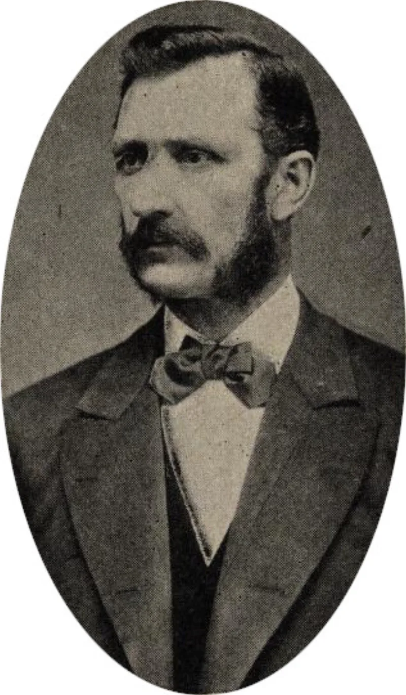
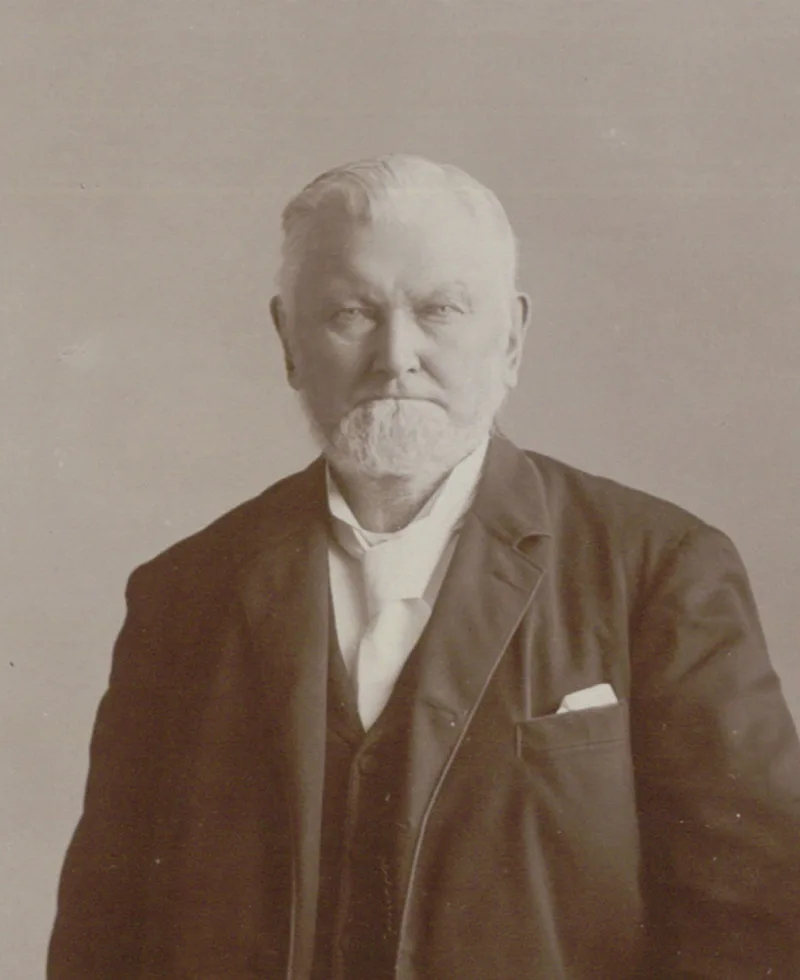

Their own church publications admit these facts. You can make this point from LDS sources alone.
The 1890 Manifesto, now Official Declaration 1, publicly ended plural marriage. Leaders then repeatedly denied that any new plural marriages were taking place.
Apostles and members of the First Presidency secretly authorised or performed roughly 250 new plural marriages between 1890 and 1904. That is D.
Michael Quinn's count, published in Dialogue in 1985. B.
Carmon Hardy documents 262 in Solemn Covenant. Many took place in Mexico, in Canada, or at sea.
Nine or ten General Authorities took new plural wives themselves.
The Reed Smoot Senate hearings, from 1904 to 1907. In March 1904 the church president Joseph F.
Smith testified under oath. He had gone on living with his five plural wives, and had fathered eleven children by them since 1890, against the law.
Weeks later he issued the Second Manifesto. Apostles John W.
Taylor and Matthias F. Cowley were forced out of the Quorum of the Twelve.
The church's own essay concedes most of it. Marriages "continued to be quietly performed" in Mexico and Canada.
The Manifesto was about the laws of the United States, and "said nothing about the laws of other nations," so leaders read it as limited. Many believed it only suspended the practice for a time.
Existing husbands kept their covenant families rather than abandon them. Only in 1904 were members "put on notice." The transition away from something leaders believed God had commanded was wrenching, and it happened under federal persecution.
They admit almost all of it, in their own essay. Joseph F.
Smith's sworn testimony is a church president admitting it himself. What is argued is motive — sincere confusion rather than duplicity.
But the Second Manifesto said no marriages had happened with the "sanction, consent or knowledge of the Church," and Quinn and Hardy document that they had. And this is the second time, after Nauvoo.
"What did Joseph F. Smith tell the Senate in 1904?"


The Manifesto spoke of United States law. It said nothing about other nations.
The church's own Gospel Topics essay makes the case, and concedes most of the record.
After October 1890, plural marriages 'continued to be quietly performed' in Mexico and Canada. The Manifesto stated President Woodruff's intention to obey the laws of the United States. It 'said nothing about the laws of other nations'.
Leaders in good faith read it as a legal document. They did not read it as a ban on the principle everywhere. 'Many Church leaders believed the Manifesto merely suspended plural marriage for an indefinite time.'
Husbands already married kept living with their plural wives, and fathered children well into the next century. They did not cast off covenant families. Only in 1904, with the Second Manifesto, were members put on notice. Taylor and Cowley were then dropped from the quorum.
Apologists add three points. Turning away from what leaders believed God had commanded was wrenching. It happened while the federal government hunted them. And muddle, not plotting, explains the fifteen-year lag.
They admit nearly all of it, and a church president admitted it under oath.
This is the rare case where the church's own essay concedes nearly every element. Marriages quietly performed with leader involvement. Cohabitation and children. The Manifesto's limited legal scope. Two apostles removed.
And Joseph F. Smith's sworn Smoot testimony of March 1904 is a first-person admission by a church president. Five plural wives, and eleven children by them since 1890.
What their case reframes is sincere confusion against duplicity. It cannot erase that leaders publicly and repeatedly denied what they privately authorised. The Second Manifesto's 'sanction, consent or knowledge' claim is falsified by Quinn's roughly 250 and Hardy's 262.
Nor can it erase that this replays the Nauvoo pattern. Measured by Proverbs 12:22, Ephesians 4:25 and Numbers 30:2, the pattern stands conceded in substance and argued only in motive.